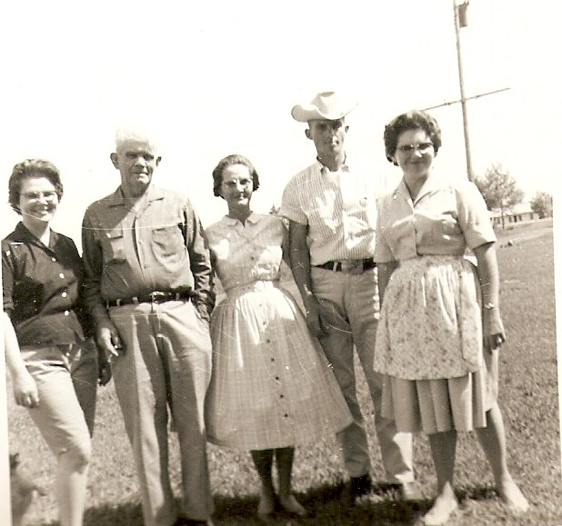
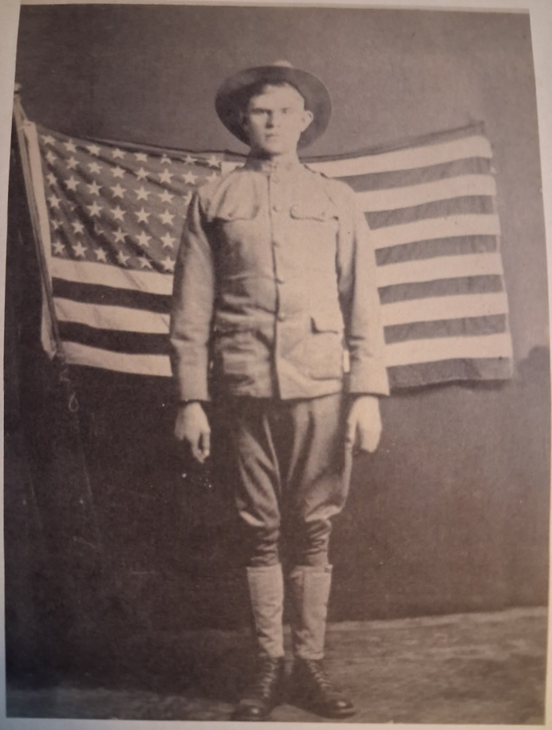
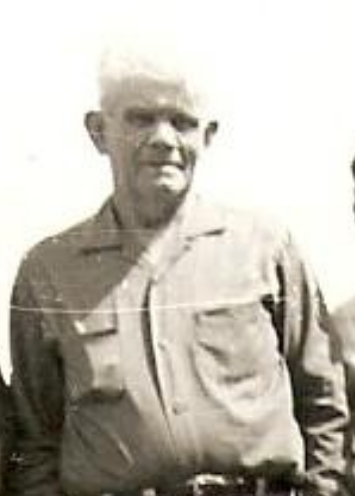
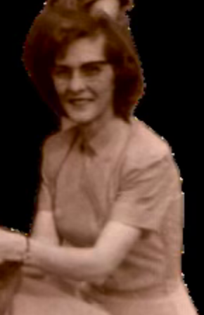
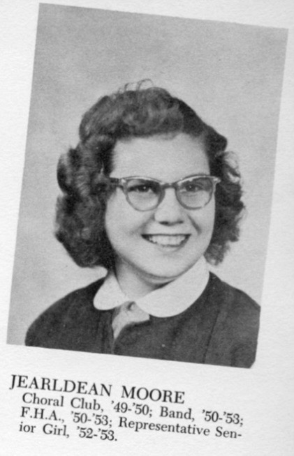
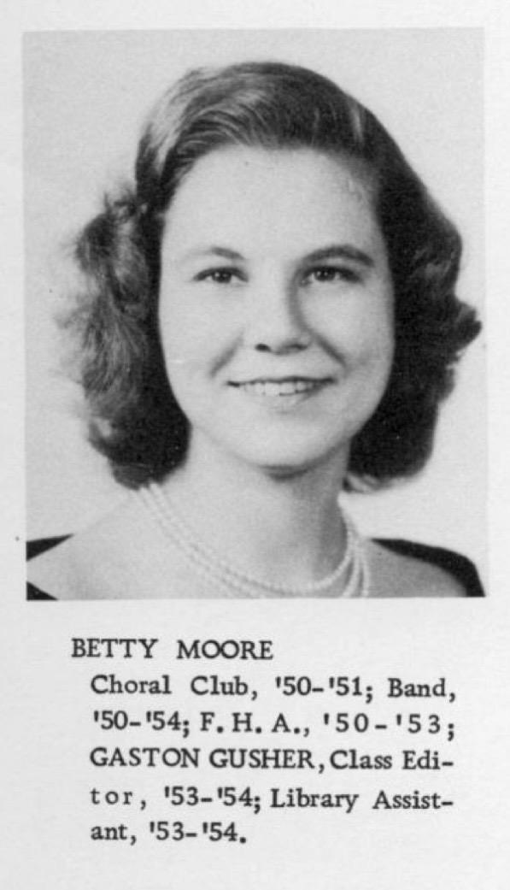
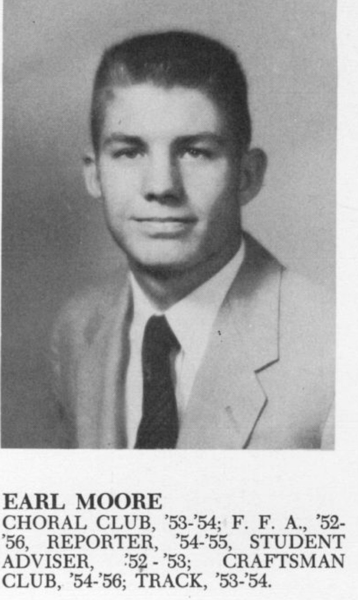
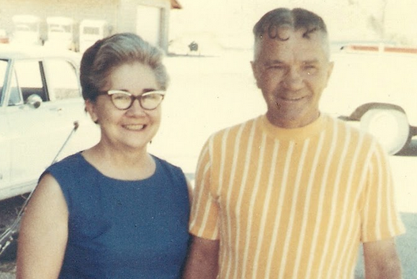

Every family has a foundation—a generation whose quiet grit, hard decisions, and daily labor carved out the life that came after them. For your family, that foundation begins with Earl Redmond Moore and Anna Laura Moore. This is their story, written so that the generations who never had the chance to sit on their porch or hear their voices can still know who they were, where they came from, and what it took to build the family you belong to today.
Born on May 13, 1896, Earl Redmond Moore grew up in California during a time when the world was shifting from horses to engines. By the time he reached adulthood, Earl had discovered a natural gift for how machines worked—a practical, hands-on talent as an engine mechanic that would carry him through every chapter of his life.
Before he marched off to World War I, Earl married a young woman in California, leaving her behind while she was expecting their first child. Like tens of thousands of California boys, Earl put on the wool service uniform and wide-brimmed campaign hat of the U.S. Army, stepping into the uncertainties of the Great War. While he was away, his daughter Louise Moore was born in 1918.
When the war ended and Earl returned home in 1919, he came back to a world that felt different —and a marriage that could not survive the distance, the years apart, and the silent weight that so many returning soldiers carried home from the front. Whether life had simply moved his first wife in another direction or Earl needed space to wrestle with the ghosts of the war, the marriage ended in divorce. Leaving Louise and his California roots behind, Earl stepped out onto the open road to start over.
The 1920s and the onset of the Great Depression were unforgiving years for World War I veterans. With no modern GI Bill or safety net, hundreds of thousands of men took to the railroads, hopping freight trains across the country in search of honest work. Earl became one of those working men on the move—riding the Southern Pacific lines east from California across the desert Southwest until he reached Texas.
A skilled mechanic could always find a way to earn a meal, and Earl eventually made his way down to the Gulf Coast port city of Corpus Christi, Texas. There, in his thirties, a man who had spent years wandering finally found the anchor he had been missing. He met Anna Laura, born July 13, 1912—a woman sixteen years his junior with a fierce work ethic and a spirit to match his own. They married when Anna was around twenty-one, determined to build a life together despite the hard times gripping the nation.
In those early days in Corpus Christi, money was tight and every dollar was earned twice. Anna ran a Watkins spice route, loading up her car with extracts, spices, soaps, and household remedies to sell door-to-door to families and rural neighbors. On February 22, 1934, their first child together, Jealdean, was born in Corpus Christi.
Running a rural sales route with an infant was grueling work, and soon another baby was on the way. Looking for steadier ground, Earl and Anna packed up and moved north to Arp, Texas, right on the edge of the booming East Texas oil fields. There, on July 7, 1935, their second daughter, Betty Jean, was born. Two years later, in 1937, their family was completed with the birth of Earl Junior.
In neighboring New London—home to one of the richest school districts in America thanks to local oil revenues—Earl landed a job that changed their lives: working as a school bus mechanic by day and driving a school bus route in the evening. It was steady, reliable work that kept him close to home and allowed him to keep Anna’s Watkins route vehicle running smoothly as she continued serving families across the East Texas countryside.
Eventually, Earl and Anna put down permanent roots on a 30-acre farm at the corner of Highway 79 South and County Road 462 in Good Spring, Texas. It was a modest homestead—a small house with a fishing pond, surrounded by red dirt, pine trees, and hard work—but to Earl and Anna, it was independence.
Life on the Good Spring farm ran on self-sufficiency and teamwork:
All three children attended Gaston School in Joinerville, Texas, carrying the values of that Good Spring farm out into the world:
In his later years, Earl Redmond Moore faced his hardest battle—spending seven years fighting Alzheimer’s disease before passing away on May 13, 1975, on his seventy-ninth birthday. Anna Laura followed him on March 25, 1983.
To the grandchildren and great-grandchildren who came after them: every time you value an honest day’s work, fix something with your own two hands, tend a garden, or hold fast to family through hard seasons, you are carrying forward the quiet strength of Earl and Anna Moore—a California soldier who rode the rails to Texas, a determined woman with a spice case and a map of country roads, and the thirty-acre farm where they built a family that endures today.

The timeline, background, and photograph are a strong plausible fit, though his exact unit cannot be confirmed from the photo alone.
If Earl served in the 117th Engineer Regiment (specifically its 2nd Battalion, which was formed from the California National Guard) or another major California unit, his path would have looked like this:
Because the collar insignia in the photo is out of focus, you can pinpoint his exact regiment and deployment using free genealogical records:
Because open web search results do not index specific archival military rosters or private subscription genealogy databases (such as Ancestry or Fold3) for individual soldiers, a definitive digital record for Earl Redmond Moore (born May 13, 1896) does not appear in public search indexes.
To definitively confirm his exact military unit, enlistment details, and transport ships, you can check the following official repositories and specific record sets:
Can you find any information about Soldiers, After returning from ww1 during the Great Depression returning to California, becoming a hobo and hitchhiking off the railroads riding from California to Texas. Does this have any truth about people trying to fit back in into society.
Yes, this reflects a well-documented chapter of American history. Hundreds of thousands of World War I veterans struggled to reintegrate into civilian life, and during the 1920s and the Great Depression, hopping freight trains between California and Texas was a major migration corridor for displaced workers and veterans.
1. Why WWI Veterans Struggled to Fit Back Into Society
When soldiers returned from France in 1919, the transition back to civilian life was abrupt and often harsh:
No Modern Safety Net: Unlike WWII veterans who received the GI Bill, WWI veterans were discharged with a $60 bonus and a train ticket home. There was no structured job placement, educational funding, or unemployment insurance.
The 1920–1921 Post-War Recession: Immediately after the war, wartime factories shut down and millions of returning soldiers flooded the labor market, causing severe unemployment and wage cuts before the Great Depression even began.
Unrecognized Trauma ("Shell Shock"): Many men returned with what is now understood as PTSD, making it difficult to hold steady indoor jobs, tolerate authority, or settle back into quiet small-town routines. Restlessness and a sense of alienation from civilians who hadn't experienced the trenches led many veterans to prefer the camaraderie of the road.
The Great Depression & The Bonus Army: By 1932, roughly 1 in 4 Americans was out of work, and veterans were disproportionately represented among the unemployed—culminating in the 1932 Bonus March on Washington, D.C., where tens of thousands of impoverished veterans demanded early payment of their promised service certificates.
2. "Hobos" vs. "Tramps" in the 1930s
In that era, hobo had a specific meaning distinct from a "tramp" or a "bum". A hobo was a migratory worker—someone who hopped freight trains specifically to follow seasonal harvests, oil booms, logging, or mechanical repair work.
For a trained engine mechanic, riding the rails was a practical way to reach regions where machinery was running: agricultural harvests (tractors and threshers), railroad roundhouses, or the booming East Texas oil fields (such as the massive Kilgore/Rusk County oil boom starting in 1930).
Along the tracks, men lived in makeshift camps called "hobo jungles," where WWI veterans often formed tight-knit groups, sharing food, coffee, and military-style camaraderie while looking for day labor.
3. The California-to-Texas Railroad Corridor
Riding the rails from California to Texas was one of the busiest and most viable routes in the country, especially during the winter months when northern rail lines froze:
The Southern Pacific "Sunset Route": This main line ran directly from Los Angeles across the deserts of Arizona and New Mexico, entering Texas at El Paso and continuing through San Antonio, Houston, and into East Texas.
The Atchison, Topeka & Santa Fe: Connected California through the Southwest straight into central and north Texas.
Why Men Moved East from California: While many Dust Bowl migrants headed west to California, many men already in California headed east to Texas during the 1930s. California actually set up "bum blockades" at its borders to turn away penniless travelers, whereas Texas —fueled by the 1930s East Texas oil boom and massive cotton and timber industries—offered active mechanical, construction, and roughneck work.
If this is part of your family's story, it aligns closely with the lived reality of many WWI veterans of that generation—men who possessed practical mechanical skills, were used to living outdoors under rough conditions, and used the railroads to chase work and rebuild a foothold during hard times.
The move from Corpus Christi to Arp in 1934–1935 aligns closely with Texas's economic landscape during the Great Depression. While the rest of the country was mired in severe unemployment, both Corpus Christi and East Texas were rare bright spots fueled by oil and port development—yet Arp and the neighboring New London area offered a level of explosive, cash- rich stability that was hard to match anywhere else in the United States.
When Earl (at age 37) and Anna were in Corpus Christi in early 1934, the city was faring better than most American cities, though its economy was still in the early stages of an industrial shift: The Economy: The Port of Corpus Christi had opened as a deep-water port in 1926, initially built around shipping cotton. By 1934, local oil discoveries in the Saxet and Greta fields were just beginning to transform the port from an agricultural hub into a petroleum and refining center. In 1934, Southern Alkali Corporation opened a major chemical plant there, bringing new industrial jobs.
The Job Market for a 37-Year-Old Mechanic: At 37, Earl was in his prime working years—old enough to have deep, proven mechanical experience (including military service and over a decade of civilian work), yet young enough for heavy physical labor. In Corpus Christi, mechanics were needed for port cargo equipment, commercial fishing boats, cotton gins, farm tractors, and early oilfield drilling rigs. However, competition was stiff, and steady, salaried positions with benefits were scarce compared to irregular day-labor or seasonal garage work.
Moving north to Arp (in Smith County, right on the edge of the Rusk County oil fields) put the family at the epicenter of the East Texas Oil Boom, which had erupted just a few years earlier in late 1930.
A Depression-Proof Economy: While national unemployment hovered above 20%, the East Texas Oil Field was an island of prosperity. By 1934–1935, federal and state regulations (such as the Connally Hot Oil Act of 1935) had stabilized crude oil prices around $1.00–$1.18 per barrel, turning the wild tent-city boom into steady, long-term industrial employment.
The Wealth of the New London School District: Because the New London Independent School District sat directly atop one of the richest sections of the oil field, oil tax revenues made it one of the wealthiest rural school districts in the entire country.
Why the New London School Job Was a Major Catch: Landing a job as a bus mechanic and evening bus driver at New London School in 1934 or 1935 was a premier, sought-after position for a family man. Unlike roughnecking in the oil patch—which was dangerous, dirty, and subject to layoffs—a school district job offered:
Steady, reliable year-round pay backed by oil tax revenue. Modern equipment and facilities: New London spared no expense on its campus, buses, and maintenance shops.
Time at home: Working in the school garage during the day and driving an evening route allowed Earl to sleep in his own bed every night—a stark contrast to traveling or working irregular oilfield shifts. (Note: Knowing he worked at New London School in 1935 also places the family right in the community two years before the tragic March 18, 1937 New London School explosion, when their daughters would have been roughly 3 and 1½ years old.)
The timing of their move makes tremendous practical sense when looking at Anna’s work and their growing family:
How a Watkins Route Worked in the 1930s: J.R. Watkins dealers operated as independent door-to-door route salespeople, driving a car or light truck loaded with extracts, spices, liniments, soaps, and household remedies to rural farms and small towns. During the Great Depression, Watkins routes were a vital lifeline for families because rural customers relied on them instead of driving into town, and dealers could earn steady cash commissions.
The Strain of Two Babies: Running a rural sales route meant hauling heavy wooden sample cases up porch steps, driving dusty or muddy county roads in all weather, and keeping strict inventory and credit ledgers. Doing that with a newborn in early 1934—and then discovering she was pregnant again by autumn 1934—would have been physically exhausting.
In East Texas, the dense population of oilfield families living in camps, boarding houses, and newly built homes around Arp, Overton, and New London created a concentrated customer base—meaning Anna wouldn't have had to drive as many desolate miles between houses.
Having Earl on a predictable schedule at the school garage meant he could maintain her route vehicle, help load heavy cases, or watch their toddler while Anna made local deliveries—and once Earl secured the steady school paycheck, the family no longer had to rely solely on route commissions to survive.
The years between the late 1930s and the post-World War II era in Arp and New London represent a deeply defining chapter for the Moore family. Moving from Corpus Christi into the heart of the East Texas oil patch placed them right at the epicenter of a region experiencing dramatic historical events and rapid modernization.
When Earl Junior was born in 1937, New London was already recovering from the tragedy of the March 18, 1937 school explosion—an event that profoundly impacted the entire community and led to nationwide mandates for adding odorants to natural gas and overhauling school safety standards. Working as a bus mechanic and driver for the school district during and after this period put Earl right at the center of a tight-knit, resilient school system that prioritized rebuilding modern, reliable transportation and facilities for its students.
Moving the growing family out to the 30-acre homestead at the corner of Highway 79 South and County Road 462 in Good Spring (just south of Henderson near Goodsprings Water Supply captured a classic Depression- and wartime-era survival strategy: combining steady wage employment with complete agricultural self-sufficiency.
The Arrival of Electricity (1937): The timing of their move coincided with the transformative rollout of the Rural Electrification Act (REA). Getting electricity in 1937 meant transitioning from kerosene lamps to electric lights, though rural comforts were still balanced with traditional necessities like the outdoor outhouse and well water piped into the kitchen.
The Self-Sufficient Homestead: Maintaining a one-acre vegetable garden, a fishing pond, and a substantial 15x40-foot chicken house provided vital food security. In the 1940s and 1950s, small-scale poultry production in East Texas evolved into a lucrative local market, allowing farm families to supplement their income by selling processed chickens directly to neighbors and local stores.
Family Division of Labor: Balancing Anna’s demanding Watkins spice route across rural roads with Earl’s school district duties required a true family partnership. Betty and Jealdean managing the household chores—cooking, cleaning, washing, and ironing—alongside helping process chickens explains why young Jealdean developed such a strong aversion to eating chicken after experiencing the realities of farm work firsthand.
All three children—Betty, Jealdean, and Earl Junior—ultimately graduated from the Gaston school district, which served the New London, Good Spring, and surrounding oil field communities. Funded largely by the immense oil wealth of the district, Gaston schools offered robust academic and extracurricular opportunities, setting the children up for the post-war modern world.
Earl Redmond Moore’s dedication as a mechanic, father, and provider—enduring the hardships of the Great Depression, the transition from the rails to the oil patch, and decades of hard work before his passing in 1975—left a lasting legacy of resilience preserved through family history and these remarkable milestones.
The key change was federal, not specific to Rusk County. The Poultry Products Inspection Act was signed on August 28, 1957; it introduced compulsory federal inspection for poultry slaughtered for interstate or export sale. Before that, inspection was not universal—one account of the East Texas poultry industry says that in the mid-1950s less than a quarter of U.S. poultry sold was federally inspected, and the Center, Texas plants had no inspectors. Wikipedia
Texas’s own Meat and Poultry Inspection Act took effect September 1, 1989. It established the state framework for inspection, applying statewide rather than setting a separate date for Rusk County. Texas So, for a Rusk County history, 1957 is the major turning point for poultry inspection requirements, while 1989 marks Texas’s state-law framework. These dates concern commercial slaughter and processing for sale; the exact requirements for a particular farm orsmall-scale operation depend on what was sold, where it was sold, and whether an exemption applied.

Earl Redmond Moore born May 13, 1896 in California died May 13, 1975

Anna Laura born July 13, 1912 in Corpus Christi, Texas died March 25, 1983

Jealdean Moore Whitaker born February 22, 1934 in Corpus Christi, Texas died November 16, 2017

Betty Jean Moore Landry born July 7, 1935 in Arp, Texas died July 19, 2017

Earl Moore born 1937 in Arp, Texas died 1989

Daughter of Earl first wife: Louise Moore born 1918 in California died 1987